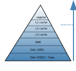
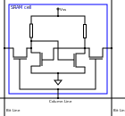
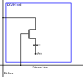
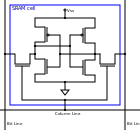
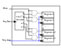

Memory Organization
In this blog post the author will introduce the different types of semiconductor memory. This is a wide field, so the goal here is to focus on the most important ones and draw the differences between the different types.
The Memory hierarchy
As in computing all is about performance, we first have a look at the memory hierarchy. As you can see in the pyramid below, memory is ordered in layers. The slowest elements -also the ones with highest latency - are at the bottom of this pyramid, while the fastest ones are shown at the apex. Imagine your desk is the actual CPU, with an open book laying in front of your eyes. This is the register. Now you read in this book a reference to another book in your bookshelf. Your bookshelf is the cache here. The cache itself is again layered. Lets say L1-cache is the bookshelf in your room, L2-cache the bookshelf in another room and L3-cache books stored in a box in the same room. If you now have a reference in your current book (the one on your desk), that refers to a book you do not possess, you need to go to the public library. The public library is your RAM. The access times are really high. And lets say the book you need is also not available there, and they must order it from a library in another city. Then you got to the level at the bottom, which is the disk storage unit.

At the bottom is also the low-priced memory (per byte). The higher you go on the hierarchy the costlier the memory becomes. In this article we will expand our knowledge about the RAM. Caches are more complex and will eventually be handeled in a future article.
RAM and ROM
The image below shows the overall organization of a ram circuit, RAM stand for random access memory, so it means a memory with arbitrary access. Simply put, you set an address in and get the data which is stored under the given address location out.The schematic given here also holds for Read only memory (ROM). Complementary to ROM, which is persistent, RAM is volatile. So it needs ongoing power supply,otherwise it loses its stored data.

As can be seen the main parts apart from the memory itself are column- and row-decoder, as well as read / write amplifier. The address-decoder just consists of well-known combinatorial logic, while the amplifier are a bit more complex. The blue dots on the intersection of rows and columns mark the placements of the memory cell, depending on the type of memory, those differ and are explained in the next section.
The different memory cells
static RAM (SRAM) |
dynamic RAM (DRAM) |
 |
 |
transistor # 4 |
transistor # 1 |
 |
|
transistor # 6 |
SRAM vs. DRAM
The static RAM (SRAM) cell has the advantage of holding the stored value as long as the power supply is not interrupted. Its clear disadvantage is the circuit effort of minum 4 transistor (for an nmos design) but regularly 6 for a cmos design.That makes it ideal for small pockets of memories like registers and cache located near the cpu. Complementary the dynamic RAM (DRAM) cell needs just one transistor and one capacitor to hold the stored value, but needs to be refreshed periodically.
The register file
At this point the author wants to introduce the so-called register file. This is a type of memory which can have multiple read ports. which is useful as input for the ALU we introduced in the last blog post. While the amount of read ports is theoretically unlimited, the amount of write ports is usually one. The reason, as the vivid reader can imagine is to mitigate hazards, which is with multiple write ports difficult to handle.
